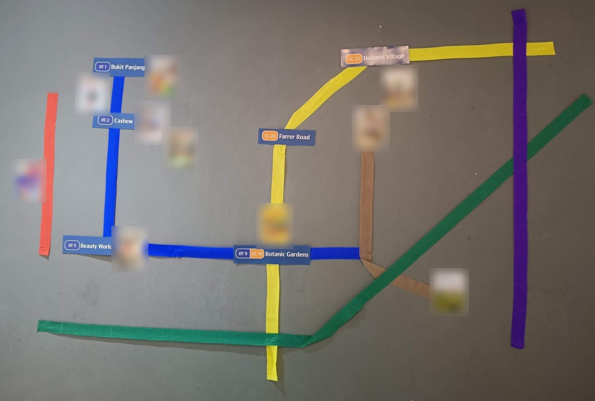
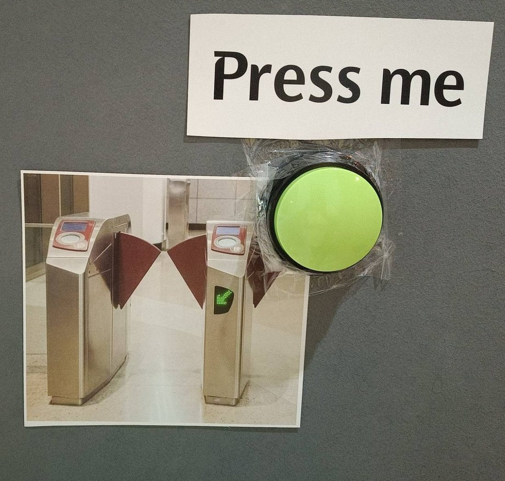
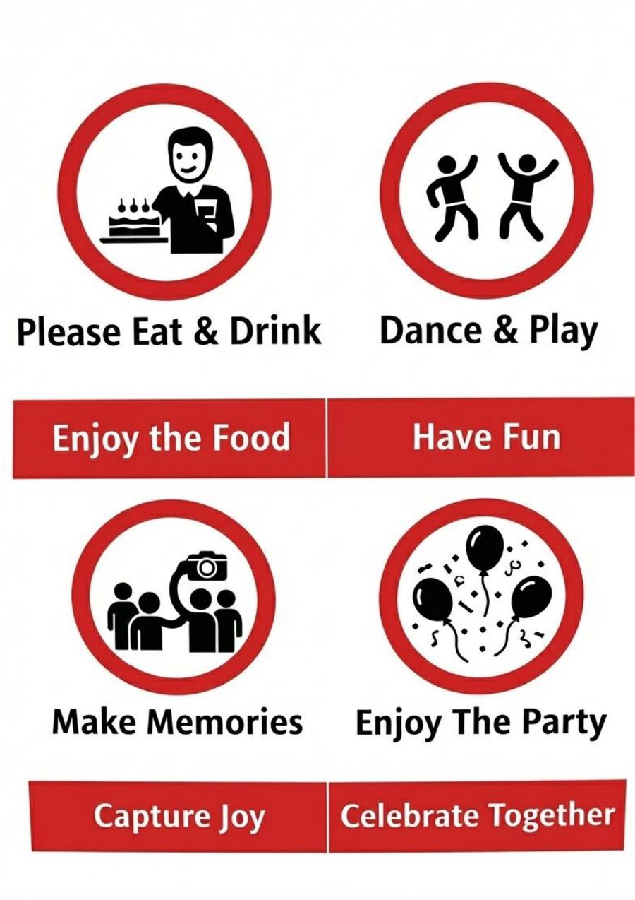
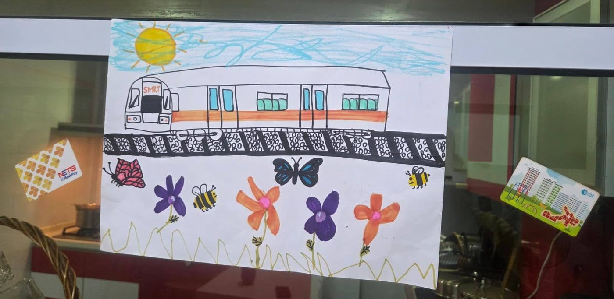
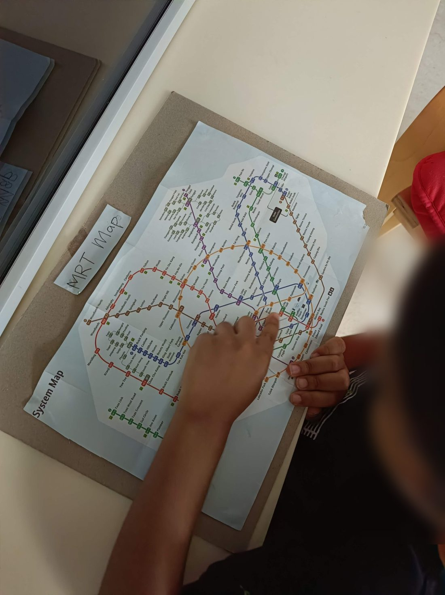

Hi, I'm Kavya. My son is 3 now (as of 2026), and the Singapore MRT is his whole world!
He listens for the chime, waits for the lady to say the name of the next station, and says it right along with her. I wanted to give him a way to hear those announcements at home, whenever he likes.
CC Where it started
Every week we took the train from Botanic Gardens to Holland Village for his toddler class. It's only two stops on the Circle Line, but for him it was the best part of the day: the doors closing, the chime, "Farrer Road", and then "Holland Village". The Circle Line is officially orange, but in our house it will always be the yellow line, and it is his absolute favourite.
- DT9CC19Botanic Gardens
- CC20Farrer Road
- CC21Holland Village
3 An MRT-themed birthday
So of course, when he turned three, the party had to be MRT-themed. We made our own map on the wall with coloured tape, with station signs for the places that matter to him and photos of him at each one. There was a fare gate with a big green button to press. The kitchen had an SMRT train drawing, and instead of the usual "no eating or drinking" signs, ours said please eat and drink.




? The idea
Recently, I caught my son looking at the MRT map he has at home. He was staring at the stations, trying to make sense of them.
He can't fully read yet, so I thought: what if I found a way for him to explore the map on his own?

▶ Why this website
So I built a map where he can explore and learn the station names on his own (it works on a phone or an iPad). He taps a station, hears it announced, and then hears the doors close, just like on the train. He can pinch to zoom in on his favourite parts of the network, and tap a line colour to follow just that line.
The map is redrawn by hand from the official system map, in a reconstruction of the typeface used on Singapore's transport signs. I built it with a lot of help from an AI coding assistant (thanks Claude, you're da best!), one station at a time.
♥ For other little MRT fans
If your child loves the MRT as much as mine does (or you love it, don't be shy!), I hope this makes them smile. A few tips for using it on an iPad:
- Turn the sound up, and tap Let's ride to start. iPads only allow sound after a first tap.
- Add it to the Home Screen (Share button, then Add to Home Screen). It then opens full-screen like an app.
- Turn on Guided Access (Settings, then Accessibility) if you'd like little hands to stay on the map.
Say hello
I'd love to hear from other MRT-loving families, or about a station that doesn't sound right.
A note on the sounds
This is an unofficial fan project made for my son, and it isn't affiliated with or endorsed by the Land Transport Authority, SMRT or SBS Transit.
The chime, the door-closing sound and the station announcements recorded on board belong to their operators. They're used here non-commercially, only to bring a little joy to young train fans. If you own these sounds and would like anything changed or removed, please get in touch and I'll take care of it straight away.